Graph Database: OrientDB
a (short) introduction for JUG
Riccardo Tasso (@riccardotasso)
JUG Trento - 03/11/2015
You'll find sources and examples of this slides on github
NoSQL Databases
- Not Only SQL
- simplicity of design (through different data models)
- horizontal scaling
- a finer control over availability
Data Models
Schema or schemaless?
- Why Schemaless? (2009, Mongodb Blog)
- Stop Claiming that you’re Using a Schemaless Database (2014, jOOQ Blog)
-
Schemaless data structures (2013, Martin Fowler)
- Schemaless ⇒ implicit schema = Bad Thing
- prefer explicit schema...
- ...but sometimes you do need schemaless approach
If implicit schema are such a problem
Why do people want schemaless?
(2013, Martin Fowler)
- non uniform data: custom fields; non uniform types
- to avoid schema migration
Horizontal Scalability
the capability of adding a new node to a (distributed) system to improve its performances
CAP Theorem
it is impossible for a distributed computer system to simultaneously provide all three of the following guarantee:
- Consistency: all nodes see the same data at the same time
- Availability: a guarantee that every request receives a response about whether it succeeded or failed
- Partition tolerance: the system continues to operate despite arbitrary partitioning due to network failures
Eventual Consistency
- strong consistency: after the update completes, any subsequent access will return the updated value
- weak consistency: there may be a inconsistency window
- eventually consistency: if no new updates are made to the object, eventually all accesses will return the last updated value
Further References
What is a graph?
- a set of vertices
- a set of edges (links) between vertices
graph theory started in the 18th century
Graph in computer science
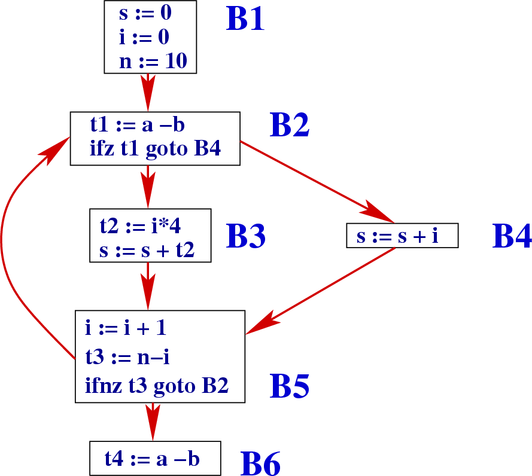compiler optimizations
Graph in telecommunications
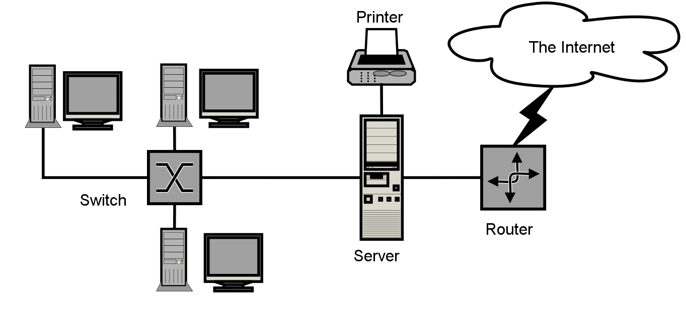computer networks (Internet)
Graph in Web

the WWW (hypertexts)
Engineering
pipe network analysis
Electrical engineering
circuit theory
Linguistics
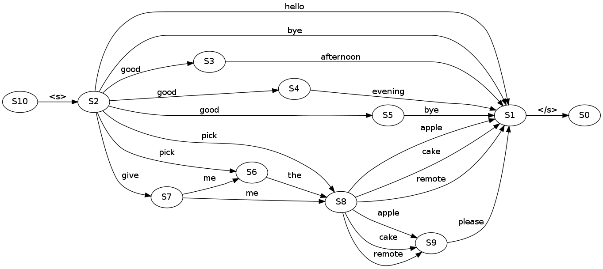language models
Biology
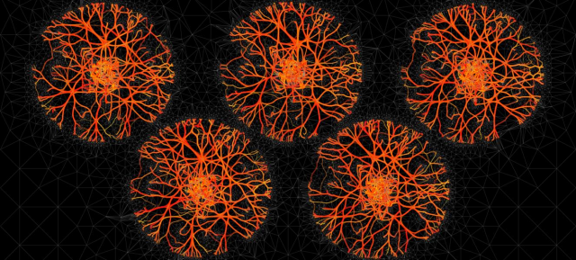protein interaction network
Social Science
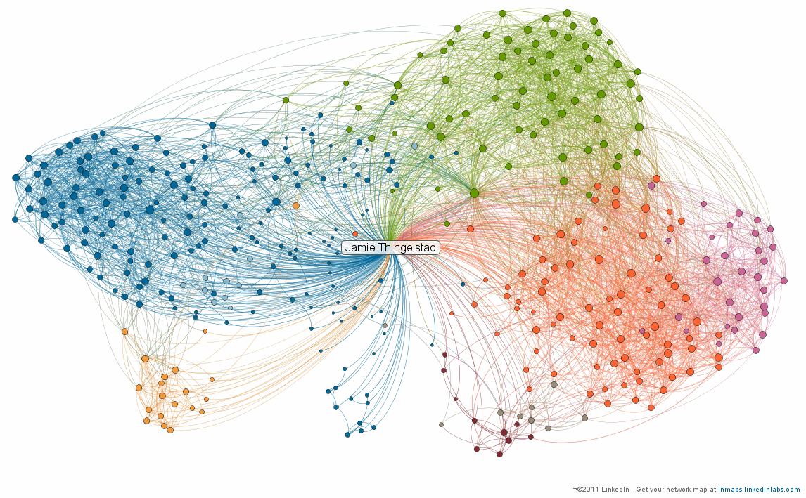social networks
What is a Graph Database?
Any storage system that provides index-free adjacency
(Marko Rodriguez, Peter Neubauer, 2010)
What's wrong with JOINS?
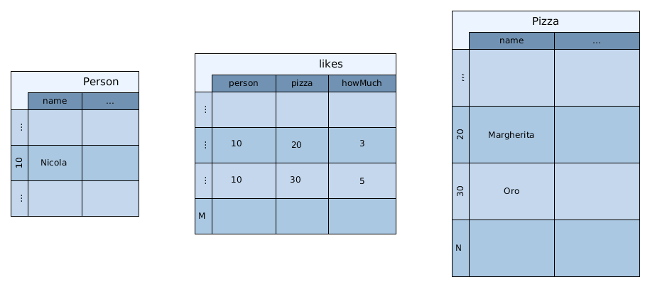let's try selecting pizzas liked by Nicola!
In RDBMS
- given a Person (Nicola)
- find Nicola (id=10) in likes table: O(log M)
- find 20 and 30 ('Margherita' and 'Oro') in Pizza table: O(log N)
In GraphDB
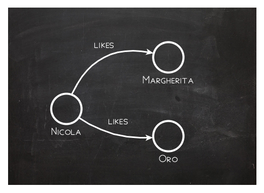wow, it's easiest to sketch!
In GraphDB
- given a Person (Nicola)
- follow the first likes link ('Margherita'): O(1)!!!
- follow the next 'likes' link ('Oro'): O(1)
- ...
- Nicola is the index to reach Pizzas!
And now:
- Find a Pizza
- which is liked by Nicola
- (or one of his friends)
- which has at least one ingredient
- typical of Trentino
With a GraphDB
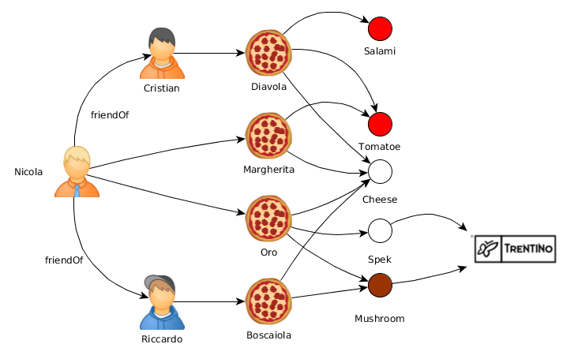Unleash the power of TRAVERSAL!
At least with SQL I know how to write it:
SELECT pizza.name
FROM
Person as person
JOIN Likes as likes ON person.id = likes.person
JOIN Pizza as pizza ON likes.pizza = pizza.id AND
JOIN Contains as contains ON pizzza.id = contains.pizza
JOIN Ingredient as ingredient ON contains.ingredient = ingredient.id
JOIN TypicalOf as typicalOf ON ingredient.id = typicalOf.ingredient
JOIN Region as region ON typicalOf.region = region.id
WHERE region.name = 'taas'
but where are Nicola's friends? :(
Further references
Tinkerpop: Blueprints
- Tinkerpop maintains a Property Graph Model (PGM) interface: Blueprints
- Java API
- vendor agnostic: a JDBC for graph databases!
- open source license (BSD)
- now under apache incubator (v3)
Property Graph Model (PGM)
- each vertex has a unique id
- each vertex is associated to a collection of key-value pairs (the key is always a string)
- each edge has a unique id
- each edge has a label
- each edge is associated to a collection of key-value pairs (the key is always a string)
DEMO: PGM
@Test public void myFirstGraphTest() {
Graph graph = new TinkerGraph();
Vertex nicola = graph.addVertex("nicola");
nicola.setProperty("biography",
"A long time ago in galaxy far far away...");
nicola.setProperty("experience", 100);
Vertex cristian = graph.addVertex("cristian");
Vertex riccardo = graph.addVertex("riccardo");
Edge nicolaFriendOfCristian = graph
.addEdge(null, nicola, cristian, "friendOf");
Edge nicolaFriendOfRiccardo = nicola
.addEdge("friendOf", riccardo);
System.out.println(DateTime.parse("2015-02-18"));
nicolaFriendOfCristian.setProperty("since",
DateTime.parse("2015-02-18"));
nicolaFriendOfRiccardo.setProperty("since",
DateTime.parse("2014-02-26"));
assertEquals(3, size(graph.getVertices()));
assertEquals(2, size(graph.getEdges()));
graph.shutdown();
}
DEMO: PGM (2)
@Test public void complexGraphTest() {
Graph graph = new TinkerGraph();
Vertex nicola = graph.addVertex("nicola");
nicola.setProperty("presentations", Arrays.asList("mvn", "java8"));
Map<String, Object> technologies = new HashMap<>();
technologies.put("java", 20);
technologies.put("sql", 15);
nicola.setProperty("technologies", technologies);
assertEquals(2, size(nicola.getPropertyKeys()));
graph.shutdown();
}
DEMO: PGM (3)
@Test
public void iterateOverMyFirstGraphTest() {
Graph graph = new TinkerGraph();
Vertex nicola = graph.addVertex("nicola");
Vertex cristian = graph.addVertex("cristian");
Vertex riccardo = graph.addVertex("riccardo");
Edge nicolaFriendOfCristian = graph
.addEdge(null, nicola, cristian, "friendOf");
Edge nicolaFriendOfRiccardo = nicola
.addEdge("friendOf", riccardo);
Edge riccardoFriendOfCristian = riccardo
.addEdge("knows", cristian);
System.out.println("* out degree:");
for(Vertex v : graph.getVertices()) {
System.out.println(format("%s has %d outgoing edges",
v, size(v.getEdges(Direction.OUT))
));
}
System.out.println("* degree:");
for(Vertex v : graph.getVertices()) {
System.out.println(format("%s's degree: %d",
v, size(v.getEdges(Direction.BOTH))
));
}
System.out.println("* list 'friendOf' edges:");
for(Edge e : graph.getEdges("label", "friendOf")) {
System.out.println(format("%s -> %s",
e.getVertex(Direction.OUT),
e.getVertex(Direction.IN)
));
}
graph.shutdown();
}
Blueprints implementations
- TinkerGraph: in-memory
- Neo4j, the World's Leading Graph Database
- OrientDB the 2nd Generation Distributed Graph Database
- Sparksee: High-performance human solutions for Extreme Data
- Bitsy: a small, fast, embeddable, durable in-memory graph database that implements the Blueprints API
- ArangoDB: the multi-model NoSQL database
- Titan: distributed Graph Database
- ... (mongodb, elasticsearch, jdbc!)
More interfaces:
- ReadonlyGraph
- IndexableGraph: add support for indices
- TransactionalGraph: add support for transactions (commit/rollback)
- EventGraph: fire events on graph change
- BatchGraph: batch insert for performance optimization
- PartitionGraph: add support for named partitions
Blueprints utilities
- input/output (GML, GraphML, GraphSON)
- outplementations: use your own graph library (e.g. Jung) with a graph database under the hood!
Tinkerpop: Pipes
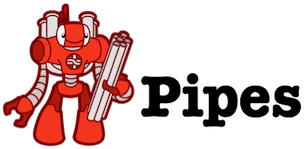Pipes is a lazy dataflow framework using process graphs
DEMO: Pipes
@Test public void myFirstPipeTest() {
List<String> romans = Lists.newArrayList("MMXV", "MCMLXXXIII", "I");
TransformPipe<String, Integer> romanToInt = new RomanToIntPipe();
FilterPipe<Integer> bigInteger = new BigIntegerPipe(1000);
TransformPipe<Integer, Integer> makeOdd = new MakeOddPipe();
romanToInt.setStarts(romans);
bigInteger.setStarts((Iterable<Integer>) romanToInt);
makeOdd.setStarts((Iterable<Integer>) bigInteger);
while(makeOdd.hasNext()) {
System.out.println(makeOdd.next());
}
}
output: 4031, 3967
Pipes: basic
- a Pipe<S,E> is an implementation of Iterable<E>
- it should have a method void setStarts(Iterable<S>)
- it must implement a method E processNextStart(S start)
- the TransformerPipe emits an output which may be of a different type from the input
- the FilterPipe emits the input only if it satisfies some condition, otherwise it evaluates the next
- the SideEffectPipe emit the incoming object unaltered but performs some computation
DEMO: Pipes (2)
@Test public void metaPipeTest() {
List<String> romans = Lists.newArrayList("MMXV", "MCMLXXXIII", "I");
TransformPipe<String, Integer> romanToInt = new RomanToIntPipe();
FilterPipe<Integer> bigInteger = new BigIntegerPipe(1000);
TransformPipe<Integer, Integer> makeOdd = new MakeOddPipe();
Pipeline<String, Integer> pipeline =
new Pipeline<>(romanToInt, bigInteger, makeOdd);
pipeline.enablePath(true);
pipeline.setStarts(romans);
while(pipeline.hasNext()) {
System.out.println(pipeline.next());
System.out.println(pipeline.getCurrentPath());
}
}
output: 4031: [MMXV, 2015, 4031]
output: 3967: [MCMLXXXIII, 1983, 3967]
Meta pipes
- Pipeline: a chain of pipes
- And/Or pipes
- ...
Branch pipes
- IfThenElse
- LoopPipe
- CopySplitPipe
- FairMergePipe
- ExhaustMergePipe
DEMO: Pipes (3)
How is Pipes related to graphs?
@Test public void graphPipeTest() {
Graph graph = PizzaGraphFactory.create();
VerticesVerticesPipe out = new VerticesVerticesPipe(Direction.OUT);
PipeFunction<LoopPipe.LoopBundle, Boolean> proceedCondition =
new PipeFunction<LoopPipe.LoopBundle, Boolean>() {
@Override public Boolean compute(LoopPipe.LoopBundle argument) {
Element v = (Element) argument.getObject();
return !v.getId().equals("trentino");
}
};
LoopPipe loop = new LoopPipe(out, proceedCondition);
Pipeline pipeline = new Pipeline(loop);
pipeline.enablePath(true);
pipeline.setStarts(graph.getVertices("id", "nicola"));
}
DEMO: Pipes (3)
LoopPipe loop = new LoopPipe(out, proceedCondition);
Pipeline pipeline = new Pipeline(loop);
pipeline.enablePath(true);
pipeline.setStarts(graph.getVertices("id", "nicola"));
while(pipeline.hasNext()) {
System.out.println(pipeline.next());
System.out.println(pipeline.getCurrentPath());
}
v[trentino]: [v[nicola], v[oro], v[mushroom], v[trentino]]
v[trentino]: [v[nicola], v[oro], v[spek], v[trentino]]
v[trentino]: [v[nicola], v[riccardo], v[boscaiola], v[mushroom], v[trentino]]
Okay Doc, bring me back to SQL!
Tinkerpop: Gremlin
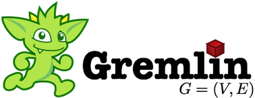Gremlin is a graph traversal language
Gremlin: our example
rayman@HAL9100 ~/gremlin-groovy-2.6.0 $ bin/gremlin.sh
\,,,/
(o o)
-----oOOo-(_)-oOOo-----
gremlin> g = new TinkerGraph()
==>tinkergraph[vertices:0 edges:0]
gremlin> g.loadGraphML('/tmp/pizza.graphml')
==>null
gremlin>
gremlin> g.v('nicola').out().loop(1){it.object.id!='trentino'}.path
==>[v[nicola], v[oro], v[spek], v[trentino]]
==>[v[nicola], v[oro], v[mushroom], v[trentino]]
==>[v[nicola], v[riccardo], v[boscaiola], v[mushroom], v[trentino]]
gremlin>
gremlin> g.v('nicola').out().loop(1){it.object.id!='trentino'}
.in().in().dedup()
==>v[oro]
==>v[boscaiola]
Gremlin: what is it?
- Gremlin is a Domain Specific Language
- for writing pipes to work with property graphs
- implemented in groovy
- has a interesting library of steps (transform, filter, sideEffect, branch)
Gremlin: under the hood
@Test public void pizzaGremlinJavaTest() {
Graph graph = PizzaGraphFactory.create();
GremlinPipeline pipeline = new GremlinPipeline();
pipeline.start(graph.getVertex("nicola"))
.as("explore")
.out().as("outgoing")
.loop("explore", PipesTest.proceedCondition)
.path();
while(pipeline.hasNext())
System.out.println(pipeline.next());
}
Gremlin: design goals
- Data Manipulation Language
- Query Language
- Elegant and succint Graph Traversals
- Extensible
- Turing complete
Gremlin: backtrack pattern
pizzas which are liked by Nicola and have an ingredient typical of Trentino
g.V('id', 'nicola')
.out('likes').as('pizza')
.out('contains')
.out('typicalOf').has('id', 'trentino')
.back('pizza')
==>v[oro]
Gremlin: except-retain pattern
pizzas which contains at least one ingredient contained in Boscaiola
g.V('id', 'boscaiola').as('pizza')
.out('contains')
.in('contains')
.except('pizza')
==>v[oro]
==>v[diavola]
==>v[margherita]
==>v[oro]
Gremlin: Loop and Path pattern
starting from Nicola, explore all the outgoing relations untill Trentino is found
g.v('nicola')
.out()
.loop(1){it.object.id!='trentino'}
.path
==>[v[nicola], v[oro], v[spek], v[trentino]]
==>[v[nicola], v[oro], v[mushroom], v[trentino]]
==>[v[nicola], v[riccardo], v[boscaiola], v[mushroom], v[trentino]]
Gremlin: Split/Merge pattern
from Cristian follow two paths: the pizzas he likes and the pizzas which are liked by his friends
g.V('id', 'cristian').copySplit(
_().out('likes').id,
_().both('friendOf').out('likes').id
).fairMerge()
==>diavola
==>margherita
==>oro
Gremlin: Pattern Match pattern
t = new Table()
g.V().as('person')
.out('likes')
.out('contains').as('ingredient')
.table(t)
gremlin> t
==>[person:v[cristian], ingredient:v[salami]]
==>[person:v[cristian], ingredient:v[tomatoe]]
==>[person:v[cristian], ingredient:v[cheese]]
==>[person:v[nicola], ingredient:v[tomatoe]]
==>[person:v[nicola], ingredient:v[cheese]]
==>[person:v[nicola], ingredient:v[cheese]]
==>[person:v[nicola], ingredient:v[spek]]
==>[person:v[nicola], ingredient:v[mushroom]]
==>[person:v[riccardo], ingredient:v[cheese]]
==>[person:v[riccardo], ingredient:v[mushroom]]
Gremlin: other patterns
- Flow/Rank: how many times a particular element is traversed over?
- Map/Reduce: group objects under a key (map and shuffle) and then apply some function to those groupings (reduce)
- Tree: useful to return the tree representing the path of graph exploration
Gremlin: learning
Gremlin: groovy DSL in Java code
@Test public void pizzaGremlinGroovyTest() throws ScriptException {
Graph graph = PizzaGraphFactory.create();
ScriptEngineManager manager = new ScriptEngineManager();
ScriptEngine engine = manager.getEngineByName("gremlin-groovy");
Bindings bindings = engine.createBindings();
bindings.put("graph", graph);
bindings.put("nicola", graph.getVertex("nicola"));
GremlinGroovyPipeline pipeline = (GremlinGroovyPipeline) engine.eval(
"nicola.out().loop(1){it.object.id!='trentino'}.path", bindings);
while(results.hasNext())
System.out.println(results.next());
}
Tinkerpop Family
What else?
Tinkerpop: Rexster
Rexster is a graph server
Rexster: features
- HTTP REST interface
- binary interface (RexPro)
- extensions
- security
- The Dog House: web interface providing
- graph visualization
- gremlin console
- extension manager
Rexster: demo
rayman@HAL9100 ~/rexster-server-2.6.0 $ ./bin/rexster.sh -s
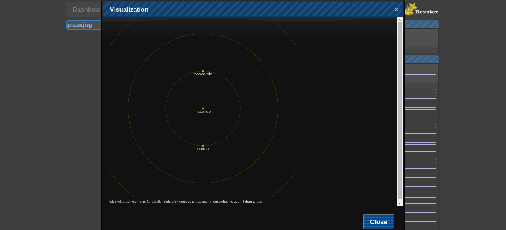 http://localhost:8182/doghouse/main/graph/pizzajugTinkerpop: Frames

Frames exposes any Blueprints graph as a collection of interrelated domain objects (an Hibernate for graphs?!).
Tinkerpop: Furnace
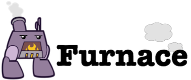Furnace is a collection of graph algorithms running over Blueprints interface
Tinkerpop 3: what's new?
- labeled vertices (more or less as classes)
- with Java8 streams, Pipes is less important
- declarative query language (match/pattern match)
- gremlin is not limited to groovy, can be implemented as a DSL in other languages (Java, python, ...)
- a focus on On Line Analytical Processing (OLAP) for batch, distributed, graph processing
Wait a minute: I've heard of Triple Stores...
What is a Triple?
a triple is a statment regarding:
- a subject (a URI or a blank node)
- a property (a URI)
- a object (a URI, a literal or a blank node)
Semantic Web Technologies
- Semantic Web is a set of standards and technlogies proposed by W3C since 2001
- The vision of Tim Berners Lee is to build a machine readable Web (Web 3.0)
- The Web as we know is a human readable graph where vertices are documents (identified by URL) and edges are hypertextual links
Data Models
| RDF/RDF-S | PGM |
|---|---|
| URI | local IDs |
| open-world | closed-world |
| classes and subclasses | one big cathegory (V) |
| edge inheritance | edge properties |
Query Language: SPARQL
@prefix jug: <http://www.jugtaas.org/owl/jug.owl#> .
@prefix foaf: <http://xmlns.com/foaf/0.1/> .
@prefix po: <http://www.co-ode.org/ontologies/pizza/pizza.owl#> .
@prefix rdfs: <http://www.w3.org/2000/01/rdf-schema#> .
SELECT ?pizza
WHERE {
jug:nicola a foaf:Person .
jug:nicola jug:likes ?pizza .
?pizza a po:Pizza .
?pizza po:hasIngredient ?ingredient .
?ingredient jug:isTypicalOf ?place .
?place rdfs:label "Trentino-Alto Adige"
}
Do you prefer Gremlin?
Data Frameworks
| Semantic Web | Tinkerpop |
|---|---|
| inference | - |
| really a standard | - |
| mature | continuously evolving |
| - | traversal oriented |
| ??? | designed to replace your database* |
* only for those use case that require a Graph!!!
Vendors
- Virtuoso is a modern enterprise grade solution for data access, integration, and relational database management (SQL Tables and/or RDF based Property/Predicate Graphs)
- Stardog is the easiest, most powerful graph database: search, query, reasoning, and constraints in a lightweight, pure Java system.
- Blazegraph is ultra-scalable, high-performance graph database with support for the Blueprints and RDF/SPARQL APIs.
- GraphDB™ – An Enterprise Triplestore with Meaning
Also Tinkerpop thinks to Semantic Web Techs
- There is a Tinkerpop Outplementation of SAIL
- which makes virtually possibile use a GraphDB as if it were a Triple Store
- My opinion is that adding layers over layers isn't a good idea...
- ...but hopefully we'll arrive to the point that choosing between SPARQL or Gremlin will be just a desing choice (without changing the database)
Also Tinkerpop thinks to Semantic Web Techs
SELECT ?name ?age
WHERE {
?person v:label "person" .
?person v:name ?name .
?person v:age ?age .
?person e:created ?project .
FILTER (?age > 30)
}
There could be a newcomer...
...the new standard could also be something else than SPARQL or Gremlin
MATCH (node1)-->(node2)
RETURN node2.propertyA, node2.propertyB
What is a Quad-Store?
- a quad-store is a triple store which can store a context for each triple
- each quad store contains many (named) graphs (one for each context)
- in Blueprints there exists PartitionGraph
- altought with RDF one named graph can also be the subject of a triple...
Further readings
- Weaving the Web - The original design and ultimate destiny of the World Wide Web, by its inventor (1999, Tim Berners Lee)
- The Semantic Web (2001, Tim Berners Lee et al.)
- RDF/XML Syntax Specification
- RDF Schema 1.1
- SPARQL Query Language for RDF
Object Oriented Databases
- a Object Oriented Database is a storage system for which the persistence unit is a Object
- the first Object Oriented Database was designed in 1985!
- Also the Object Oriented paradigm is based on graphs
- Probably the most known standard for Object Oriented Databases id OQL which wasn't never fully implemented by any database, but gave inspiration to many Object Relational Mapping languages
Object Oriented Databases are the common ancestor of Graph Databases and Triple Stores!
- OrientDB in 2005 was a Object Database (Orient ODBMS linux version)
- Virtuoso in 1998 was a Object Database (OpenLink Software - History)

OrientDB: history
- 1998, first project started by Luca Garulli as an Object Oriented DBMS (written in C++)
- 2009, OrientDB rewritten in Java (to encourage user contributions)
- 2011, NuvolaBase: company created in 2011 to develop OrientDB
- 2012, OrientDB 1.0
- 2013, Orient Technologies LTD company
- 2013, OrientDB becomes a distributed service
- 2014, OrientDB 1.7: new relationship engine
- 2015, OrientDB 2.1: performance and stability
OrientDB: the project
- hosted on github (82 contributors)
- community edition is free (AGPL2)
- enterprise edition (profiler, live monitor, ...)
- good documentation
- courses and certifications
- very active development team
- very active community
OrientDB: Document Model
- lowest level API
- the document (record) is the storage unit
- each document has a record id (ORID) assigned by the system
- each document can have many fields, which are key-value pairs
- a field can contain a nested document, which hasn't a ORID
- a field can contain a linked document
Orient DB: datatypes
- simple: boolean, numeric, string, dates, binary, ...
- collections: lists, sets, maps (embedded)
- references: LINK, RIDBAG, LINK LIST, LINK SET, LINK MAP
OrientDB: classes
- classes are collections of documents
- classes can be organized in hierarchies
Document Model: fields
ODatabaseDocumentTx db = new ODatabaseDocumentTx(DATABASE_URL).create();
initSchema(db);
ODocument luke = new ODocument("Person");
luke.field("name", "Luke");
luke.field("surname", "Skywalker");
// http://starwars.wikia.com/wiki/Luke_Skywalker
ODocument lukePhysical = new ODocument()
.field("species", "human")
.field("gender", "male")
.field("height", 1.72) // implicit meters
.field("mass", 77) // implicit kg
.field("hair", "blonde")
.field("eyes", "blue")
.field("cybernetics", "Prosthetic right hand");
luke.field("physical", lukePhysical);
luke.save();
Document Model: links
// http://starwars.wikia.com/wiki/Polis_Massa
ODocument polisMassa = new ODocument("Place")
.field("region", "Outer Rim Territories")
.field("sector", "Subterrel sector")
.field("system", "Polis Massa System")
// ...
.save();
luke.field("born", polisMassa);
luke.save();
db.close();
System.out.println(luke);
Person#9:0 {
name: Luke,
surname: Skywalker,
physical: {
species: human,
gender: male,
height: 1.72,
mass: 77,
hair: blonde,
eyes: blue,
cybernetics: Prosthetic right hand
},
born: #10:0
}v1
| Classes | Clusters |
|---|---|
| logical set of documents | physical partition of documents |
| identified by name | identified by sequential id |
| a document may be assigned to one class | a document is always assigned to one cluster |
Schema or schemaless?
- by default Orientdb works in schemaless mode: the type of each field is inferred for each document
- a schemafull mode can be activated: a record can't be created if each of his fields isn't declared
- fields constraints can be declared also in schemaless mode: this is called hybrid mode
Document Model: schema
private void initSchema(ODatabaseDocumentTx db) {
OClass person = db.getMetadata().getSchema()
.createClass("Person");
person.createProperty("physical", OType.EMBEDDED);
person.createProperty("born", OType.LINK);
}
OrientDB: Graph Model
- uses Document Model API offering a higher abstraction level
- fully compliant to Blueprints (2.6.0)
- each vertex is a document automatically assigned to the class V
- edges are stored with two links, one for the outgoing vertex, the other for the ingoing vertex
Do you remember the Blueprints example? It's the same!
Graph graph = new OrientGraph(DATABASE_URL);
Vertex nicola = graph.addVertex("nicola");
...
Just remember the right implementation!
Graph Model: something more than PGM
- classes are very usefull in real applications
- class hierarchies (as in RDFS)
- also edge can be organized in hierarchies of classes (similar to RDFS)
You can also play with gremlins!
OrientDB: Object Model
- uses Document Model API offering a higher abstraction level
- not compatible with Graph API
- each object is a document
- references are links
- Object-Document bindings are automagically generated (via introspection)
Define your domain POJO
package com.github.raymanrt.orientdb4jug.orient.starwars;
public class Person {
private String name;
private String surname;
private Physical physical;
private Place born;
public Person() {};
// getters and setters
}
package com.github.raymanrt.orientdb4jug.orient.starwars;
public class Jedi extends Person {
public Jedi() {};
}
Setup the environment
OObjectDatabaseTx db = new OObjectDatabaseTx(DATABASE_URL).create();
db.getEntityManager()
.registerEntityClasses("com.github.raymanrt.orientdb4jug.orient.starwars");
OClass person = db.getMetadata().getSchema().getClass("Person");
person.createProperty("physical", OType.EMBEDDED);
Work with your data
Person padme = db.newInstance(Person.class);
padme.setName("Padme");
padme.setSurname("Amidala");
db.save(padme);
Jedi luke = db.newInstance(Jedi.class);
luke.setName("Luke");
luke.setSurname("Skywalker");
Physical physical = new Physical();
physical.setHair("blonde");
physical.setEyes("blue");
luke.setPhysical(physical);
Place polisMassa = db.newInstance(Place.class);
polisMassa.setName("Polis Massa");
// ...
db.save(polisMassa);
luke.setBorn(polisMassa);
db.save(luke);
Work with your data
assertEquals(2, db.countClass("Person"));
assertEquals(1, db.countClass("Jedi"));
assertEquals(1, db.countClass("Place"));
ODocument lukeAsDocument = db.getRecordByUserObject(luke, false);
assertNotNull(lukeAsDocument.getIdentity());
assertNotEquals(ORecordId.EMPTY_RECORD_ID, lukeAsDocument.getIdentity());
System.out.println(lukeAsDocument);
Orient SQL
- Data Definition Language
- Data Manipolation Language (Query Language)
- DB Administration Language
inspired by SQL to be friendly
Data Definition Language
- CREATE CLASS Pizza EXTENDS V
- CREATE PROPERTY Pizza.name STRING
- ALTER PROPERTY Pizza.name IS NOT NULL
- ...
Constraints
each field can be declared as:
- bounded to a min/max value
- mandatory
- readonly
- not null
- unique
- satisfiying a given regexp
Data Manipulation Language
- INSERT INTO Pizza SET name = 'marghrita'
- UPDATE #1:1 SET name = 'margherita'
- DELETE FROM #1:1
DBA commands
- CONNECT
- CREATE DATABASE
- EXPLAIN
- GRANT
- ...
Query Language: SELECT
SELECT name, @rid, out('likes')
FROM Person
WHERE name = 'Nicola'
- projections
- target: a set of documents
- filter
Query Language: projections
- fields
- meta-fields: @rid, @class, ...
Query Language: functions
- aggregators: distinct, max, avg, ...
- utils: ifnull, sysdate, coalescence, ...
- collections: first, set, intersect, , ...
- graph: out, in, both, shortestpath, dijkstra, ...
Query Language: methods
- conversions: asString, asSet, ...
- string manipulation: append, trim, replace, format, ...
- collections: [], size, ...
- others: type, ...
Query Language: FILTERS
operators:
- any: =, <>, >, is null, ...
- string: like, containstext, matches, ...
- collections: contains, containskey, ...
- logical operators: AND, OR, NOT
Query Language: our query
SELECT name
FROM Pizza
WHERE
'trentino' in out('contains').out('typicalOf').name
AND 'nicola' in in('likes').name
Query Language: variables
SELECT name
LET $typicalPlace = out('contains').out('typicalOf').name
FROM Pizza
WHERE
'trentino' in $typicalPlace
AND 'nicola' in in('likes').name
Query Language: nested queries
SELECT name
LET $typicalPlace = out('contains').out('typicalOf').name,
$nicolasFriends = (
SELECT FROM Person
WHERE 'nicola' in both('friendOf').name
),
$pizzaLikers = in('likes')
FROM Pizza
WHERE
'trentino' in $typicalPlace
AND ('nicola' in $pizzaLikers.name OR $nicolasFriends in $pizzaLikers)
Query Language: other
- ORDER BY
- GROUP BY
- SKIP/LIMIT
- ...
Query Language: Traverse
TRAVERSE out('friendOf')
FROM (SELECT FROM Person WHERE name = 'nicola')
WHILE $depth <= 3
STRATEGY BREADTH_FIRST
Query Language: Shortest Path
SELECT shortestPath(#8:32, #8:10, 'OUT', 'friendOf')
SELECT dijkstra(#8:32, #8:10, 'weightEdgeFieldName', 'OUT')
Query Language
need some help?
Try with orientqb (inspired by jOOQ)
- simple
- supports and test (almost) all SELECT statements
- code completion is your friend!
Do you prefer this:
Query q = new Query()
.select(Projection.ALL)
.from("Class")
.where(projection("f2").eq(5))
.where(projection("f3").lt(0));
Or that?
String q = "SELECT *" +
"FROM Class" +
"WHERE f2 = 5 AND f3 < 0";
Usage Modes
Usage Mode: client/server
- HTTP REST protocol (JSON based)
- Binary protocol (for higher performances)
- Many language bindings for both protocols
Orientdb Studio
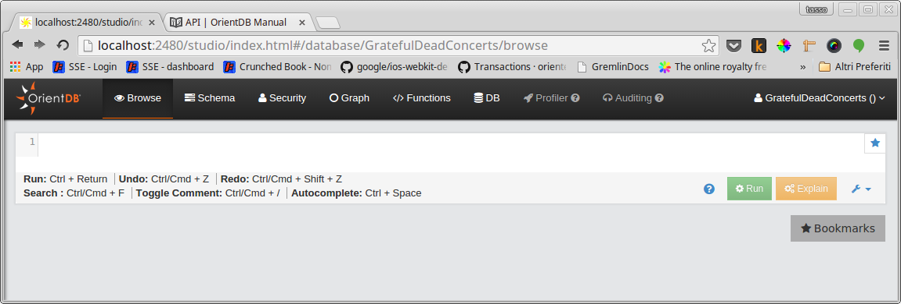- Browse: execute arbitrary commands (as in console)
- Schema
- Graph: graphical mode (both for viewing and for editing)
- ... advanced functions ...
Usage Mode: distributed server
- multi-master distributed architecture
- replica nodes can be created (Read Only mode)
- a cluster is a physical partition (shard)
- a class can be split into more clusters, each one distributed in one or more server (but no auto-sharding)
- synchronization managed by Hazelcast
- consistency: a distributed transaction is committed only when the write quorum has been reached (typically) by the majority
- indexes are always local
Usage Mode: embedded
- use OrientDB inside your Java Application
- avoids network overhead!
- supports multi-threading access (via connection pool)
The CBook
our use case for OrientDB
Data Model
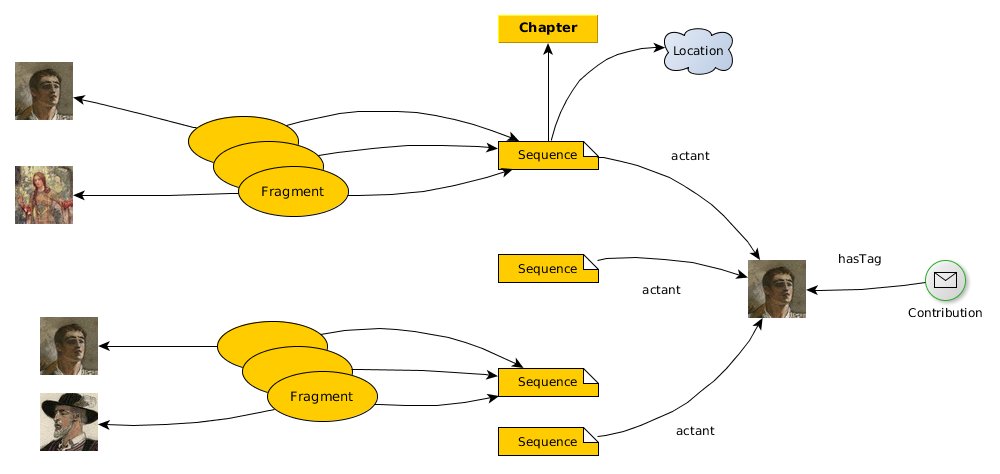Character Detail
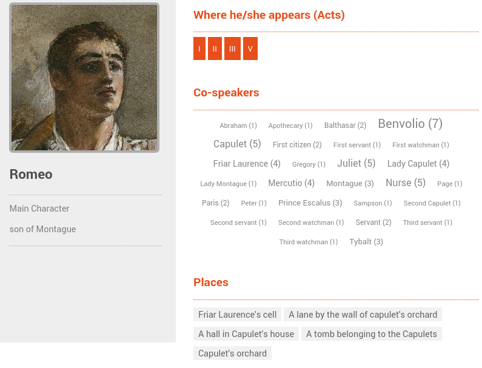main query:
SELECT name, label,
in('hasActant').out('relatedToChapter') as chapters,
in('hasActant').out('locatedIn') as locations,
in('hasTag') as contributions,
FROM #21:6
speech cloud:
SELECT localName, $seq.size()
FROM Agent
LET $seq = (
SELECT FROM Sequence
LET $speakers = in('inSequence').out('speaker')
WHERE
$parent.$current in $speakers AND
#21:6 in $speakers
)
ORDER BY localName
OrientDB: advanced aspects
OrientDB: Indexes
- update: manual, automatic
- cardinality: unique, not unique, dictionary
- Tree Based Index for range queries
- Hash Based Index for exact matches
- lucene based: full-text, geospatial
- custom indexing engines implemented as plugins
OrientDB: Edge modelling
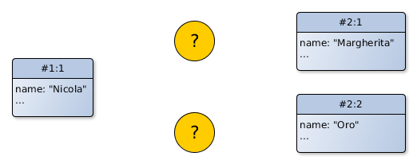how would you model a edge?
OrientDB: Edge modelling
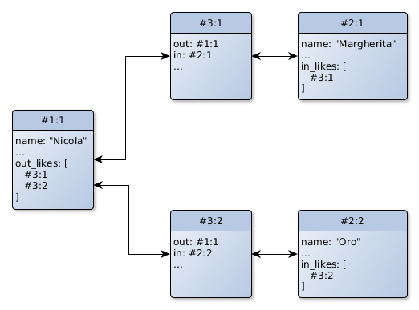regular edges
OrientDB: Edge modelling
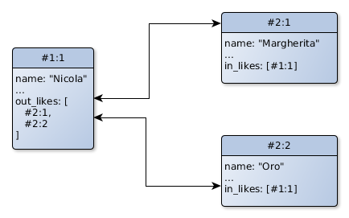lightweight edges
OrientDB: Edge modelling
- graph API hides the usage of one model or the other
- regular edges are the default
- with regular edges you can store properties on edges (PGM)
- lightweight edges have more compact representation and guarantee higher performance
OrientDB: Concurrency and Transactions
- OrientDB is an ACID compliant DBMS
- Consistency ensured by Multi Version Control System (MVCC)
- the application should handle the commit failure (concurrent modification)
- a concurrent modification can happen also when adding/removing edges!
- transactions can be disabled
OrientDB: Fetching strategies
- a fetch plan is a strategy to retrieve connected vertices
- usefull to optimize network calls in client/server mode
- usefull to serialize documents (JSON)
- "*:-1": any relation, no limits (fetches the entire tree recursively)
- "*:-1 friendOf:0": [...] but no friendOf relation
- friendOf:3": friendOf relation, at maximum depth 3
OrientDB: Security
Database security
OrientDB: Security
Database Roles
- one or more roles (ORole) can be assigned to each user
- create roles in two modes: allow all but / deny all but
- extend roles with rules on resources:
- database.[class.*|cluster.*]
- database.[query|command|schema|function|config]
- ...
- operations: Create, Read, Update, Delete
OrientDB: Security
record level security
- store which are the users that can access each record
- the class should extend a reserved class: ORestricted
- each record will inherit four (linkset) fields:
- allow
- allowRead
- allowUpdate
- allowDelete
- (Tinkerpop PartitionGraph, RDFS named graphs)
OrientDB: Security
database encryption
- it will be implemented in 2.2
- two algorithms supported: AES, DES
- it can be enabled at database or at cluster level
OrientDB: Functions
- are persistent (OFunction reserved class)
- can be written in OSQL or Javascript
- can call each other
- supports recursion
- have automatic mapping of parameters by position and name
- plugins can inject new objects to being used by functions
OrientDB: Hooks (triggers)
dynamic
- associate a event to an handler
- events:
- when: before / after
- what: Create / Read / Update / Delete
- handlers:
- OFunction
- java static method
- hooks can be assigned to (some) records instences of a class which extends the reserved class OTriggered
OrientDB: Hooks (triggers)
java hooks
- less flexibility for better performance
- implement the ORecordHook interface or extend the ORecordHookAbstract abstract class
OrientDB: Live Queries
- a client subscribes to the database for receiving changes on a given class (or on a subset of records based on a WHERE condition)
- reactive programming paradigm
- don't waste resources when data don't change
- know exactly when data change
- starting from 2.1